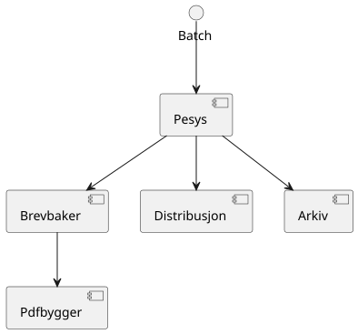
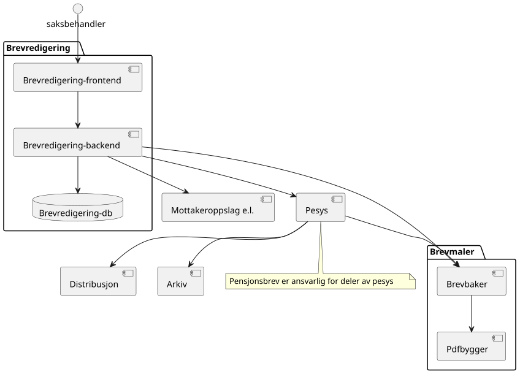
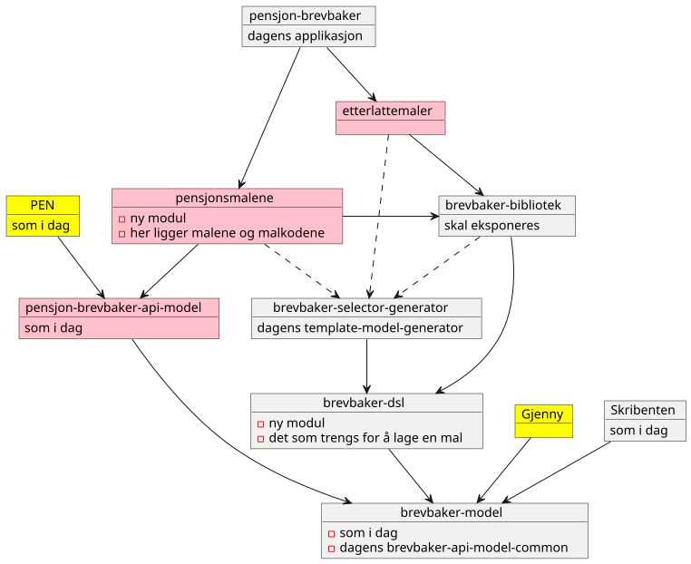
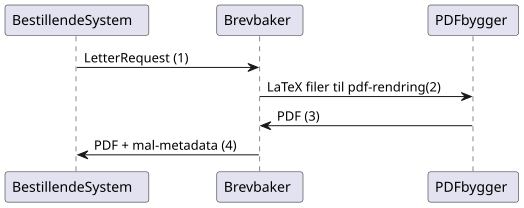
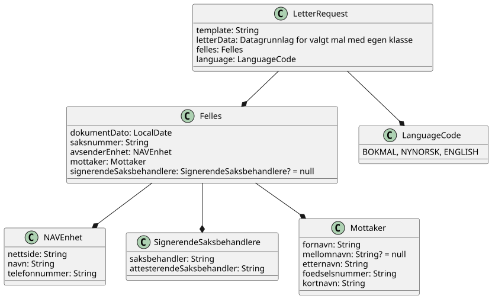
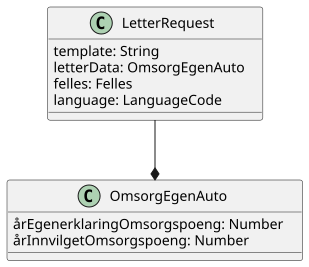
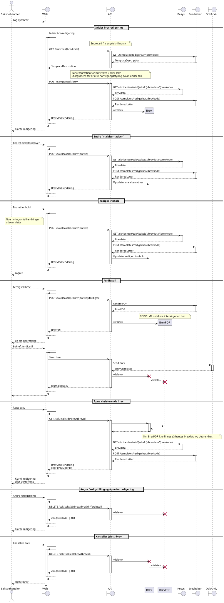
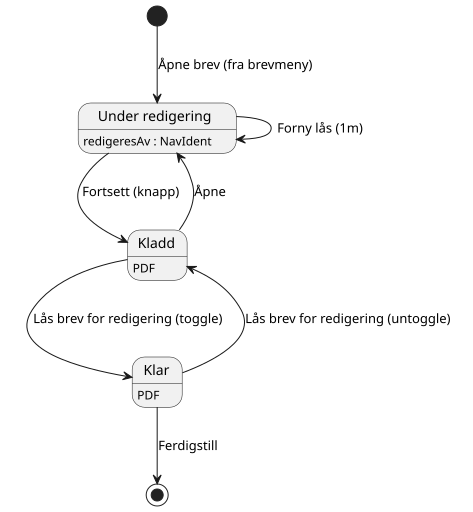

Arkitektur
Bakgrunn
Dagens brevløsning består av to systemer: Metaforce/doksys stack og HP Extreme brev. HP Extreme bruker hovedsakelig ESB(Enterprise Service Bus) som har en rekke problemer:
-
Vanskelig å foreta endringer på grunn av systemets kompleksitet og manglende kompetanse
-
Gammelt (manglende kompetanse, manglende vedlikehold av software, dyre lisenser for legacy systemer)
-
Lite fleksibelt/lite endringspotensiale
-
Avhengig av buss og stormaskin
-
For å komme oss vekk fra HP Extreme var det besluttet å ta i bruk MetaForce for å produsere brev.
-
Arbeidet med å overføre brev fra HP Extreme til MetaForce har pågått siden 2017.
-
Det å overføre brevmaler fra ett system til ett annet er en tung og langvarig prosess, og brevmalene i seg selv er av høy verdi.
MetaForce ønsker vi også å gå bort ifra fordi:
-
Team CCM har besluttet at de ikke lengre vil opprettholde MetaForce i Nav
-
Det er ett proprietært verktøy:
-
Kan ikke tilpasses våres behov
-
Vi er ingen garanti at MetaForce ikke stopper å få oppdateringer
-
Brevmaler låses inn i deres løsning og kan ikke automatisk overføres til nye løsninger
-
-
Det forvaltes ikke av Team Pensjonsbrev, så vi er avhengig av utviklere utenfor teamet hver gang vi skal gjøre endringer i brev.
Se også: Oversikt - Faglige problemstillinger (krever innlogging)
Beslutninger
Utvikle brev-løsningen selv
Det ble vurdert å ta i bruk hyllevare(OpenText Exstream), men da antar vi at vi vil støte på tidligere problemstillinger med MetaForce. OpenText Exstream er hyllevare som vi ikke kan tilpasse selv, og vi låser brev-malene inn i ett eksternt CCM verktøy slik som før. Dersom OpenText Exstream ikke vedlikeholdes er vi tilbake til samme tilstand som i dag.
Vi valgte å utvikle en egen fullstendig løsning og ikke hyllevare fordi:
Implementasjonen av brev-malene er av høy verdi. Ved å ta i bruk en egen løsning kan vi skrive malene og lagre de i en løsning vi kan vedlikeholde over lang tid. Vi ønsker at løsningen skal vare så lenge som mulig. Ved å lage en egen løsning vil vi kunne forvalte den så lenge Nav har utviklerkapasitet.
Logisk skille mellom bestemmelse av innhold og rendring av brev
Selv om vi skriver våres egen løsning må vi ha avhengigheter til eksterne verktøy for å produsere PDF dokumenter.
For å ikke knytte oss hardt mot hvordan dokumentet vises, har vi bestemt oss for å skille produksjonen av det tekstlige innholdet i brevet fra verktøyet som produserer den endlige visningen.
Det betyr at alt innholdet i brevet bestemmes av vår egen applikasjon(brevbakeren), også overlates PDF produksjonen til et annet verktøy(LaTeX container i våres tilfelle).
Om vi ønsker å gå bort fra LaTeX i fremtiden slipper vi å skrive alle brevmalene på nytt, og vi trenger kun å lage en ny integrasjon mot ett annet verktøy. Om vi f.eks ønsker å produsere html brev eller noe annet kan vi bare lage ett nytt visnings-lag uten å endre på koden som produserer innholdet i brevet.
Dagens arkitektur for bestilling av automatiske brev

Planlagt arkitektur for brevredigering
Det er tiltenkt at redigering og bestilling av manuelle brev skal gjøres gjennom en dedikert applikasjon. PSAK skal lenke til denne applikasjonen. Det skal minimeres i størst mulig grad hvilke data vi lagrer i databasen til denne nye løsningen, blant annet vil all person og saksdata overlates til Pesys og andre systemer. Kun data om hvordan et brev evt. er endret på skal lagres, samt innstillinger for den enkelte saksbehandler.

Løsningsbeskrivelse av Brevbaker og pdfbygger
Brevbaker er en mikrotjeneste uten state som tar inn informasjon som kreves for ett brev (navn, adresse, saksnummer osv) , og gir tilbake en PDF via REST grensesnitt. Brevbakeren bestemmer selve tekstlige innholdet i ett brev basert på brevbestillingen.
Datagrunnlaget vil variere pr brev og svarer med en pdf. Brevene vil inneholde ulik informasjon som f.eks Verken PDF dokumentet eller informasjonen som brukes til å generere dokumentet lagres i brevbaker/pdf-bygger
Pdf-bygger er en tjeneste som mottar en liste med filer, og kompilerer de som ett LaTeX prosjekt.
Arkitektur

Prosess / Brukstilfelle
Overordnet vil en bestilling gå slik:

1. Bestillersystemet fyller ut en LetterRequest med informasjon som skrives i brevet.
(modell kan være utdatert)

Felles-feltet inneholder data som kreves for bestilling av alle brev. Feltene der det står "? = null" er valgfrie. letterData feltet inneholder ulik datastruktur avhengig av hvilket brev som bestilles. For eksempel ved bestilling av brevet "Egenerklæring godskriving omsorgspoeng" krever at letterData er inneholder malens unike grunnlag som ser slik ut:

2. Brevbakeren bruker input data sammen med malen for å bestemme innholdet i brevet
For å bestemme det tekstlige innholdet og elementer i brevet kombinerer vi malen med dataene. Malen er definert ved hjelp av kotlin DSL. Malen kan se for eksempel slik ut:
Eksempel
object EksempelBrev : StaticTemplate {
override val template = createTemplate(
//ID på brevet
name = "EKSEMPEL_BREV",
//Master-mal for brevet.
base = PensjonLatex,
// Unik datagrunnlag/DTO for brevet
letterDataType = EksempelBrevDto::class,
// Hvilke språk brevet støtter
lang = languages(Language.Bokmal),
// Hovedtittel inne i brevet
title = newText(Language.Bokmal to "Eksempelbrev"),
// Metadata knyttet til en brevmal som ikke påvirker innholdet
letterMetadata = LetterMetadata(
// Visningstittel for ulike systemer.
// F.eks saksbehandling brev oversikt, brukerens brev oversikt osv
displayTitle = "Dette er ett eksempel-brev",
// Krever brevet bankid/ nivå 4 pålogging for å vises
isSensitiv = false,
)
) {
// Tekst-innholdet i malen
outline {
// Undertittel
title1 {
// Tekst
text(Language.Bokmal to "Du har fått innvilget pensjon")
}
// Inkluder data fra datagrunnlaget til malen inn i brevet som tekst
eval { argument().select(EksempelBrevDto::pensjonInnvilget).format() }
// Inkludering av eksisterende frase/mini-mal for gjenbruk av elementer
includePhrase(
argument().select(EksempelBrevDto::pensjonInnvilget)
.map { TestFraseDto(it.toString()) },
TestFrase
)
}
}
}Ved bruk av PensjonLatex master-malen vil det genereres en rekke filer som sendes til pdf-byggeren:
-
params.texinkluderer alle felles-elementer som kreves i master-malen. -
letter.xmpdatainneholder metadata for pdf-dokumentet -
letter.texinneholder hoveddelen av brevet med tekst og data fra brevmalen -
nav-logo.pdflogo for master-malen -
nav-logo.pdf_textex kode for å bruke nav logoen -
pensjonsbrev_v2.clsfil som beskriver plassering av innhold og utforming av brevet. Fungerer noe likt css.
3. PDF-byggeren bygger pdf fra inngående filer
Pdf-byggeren kjører XeTeX på letter.tex filen og returnerer resulterende PDF til brevbakeren.
4. Brevbaker svarer med brev-metadata og pdf
Brevbakeren svarer bestillende system med PDF og metadata som hører til brevmalen som produserte brevet definert i LetterMetadata.
Teknologivalg
Github actions
For CI/CD pipeline (kontinuerlig leveranse/integrasjon) har vi valgt github actions siden det er ett bra verktøy som mange på huset bruker. NAIS-plattformen har også tilrettelagt for at vi lett skal kunne bruke github actions for å deploye applikasjoner til ulike miljø.
Vi bruker Github actions for å automatisere en rekke oppgaver:
-
Bygge applikasjoner og container images.
-
Unit testing, integrasjonstester og ende til ende tester.
-
Deploye til produksjon ved push til master.
-
Deploye til development ved manuell trigging av action mot branch.
-
Bygge asciidoc til html og deploye automatisk til github pages ved endringer i dokumentasjonen.
Ktor
Ktor er ett moderne og lettvektet rammeverk for å lage http tjenester som fungerer godt sammen med Kotlin. Vi valgte Ktor ettersom vi ønsket å bruke Kotlin og ikke har behov for tyngre rammeverk som f.eks Spring.
Asciidoc
Asciidoc er brukt mye i Nav og gir oss muligheten til å legge dokumentasjon nær koden. Dette gjør det lettere å legge ut endringer sammen med dokumentasjon. Asciidoc kan også kompileres til HTML på github pages som også gjøres mange andre steder i Nav.
LaTeX
Vi har valgt LaTeX for å produsere brev/pdf-dokumenter. LaTeX er ett typesettingssystem for produksjon av dokumenter. LaTeX er vel-etablert, Open-source, gratis og forbedret over lang tid(lansert i 1980). Ettersom LaTeX brukes av de fleste akademiske institusjoner kan man også anta at de fleste utviklere har noe erfaring med eller kjennskap til LaTeX. Det er viktig å understreke at vi ikke har sterke knytninger til valget av LaTeX. Vi bruker kun LaTeX for å bestemme hvordan innholdet til ett brev presenteres/vises i en pdf, ikke for å bestemme det tekstlige innholdet. Dette gjør det mulig å bytte ut LaTeX med andre representasjoner av det tekstlige innholdet i brevet med f.eks HTML.
Kotlin
Kotlin er ett moderne kodespråk basert på Java som kjører i JVM. Vi bruker Kotlin ettersom det er god støtte og erfaring med Kotlin i Nav. Vi på teamet har også god erfaring med Kotlin.
Skribenten
Skribenten er en web applikasjon hvor saksbehandlere kan bestille, redigere og sende brev. Skribenten har full støtte for redigering av brev fra Brevbaker, samt den gjør det mulig å bestille legacy brev fra Doksys og Exstream. Skribenten består av skribenten-web (React) og skribenten-backend (Kotlin/Ktor). Skribenten-backend er i utgangspunktet ansvarlig for å videresende alle requests på vegne av skribenten-web.
Grunnleggende scenarioer
-
Web: skribenten-web
-
API: skribenten-backend

Brevredigering status diagram

Utvikling av brevmaler i brevbakeren
Brevbakeren inneholder brevmaler i form av vår egen Kotlin DSL(Domain specific language) DSL’en er utviklet for å kun inneholde de elementene vi trenger for å representere innholdet i brev i nav.
Vi har bevisst utelatt funksjonalitet som ikke direkte har med visningslogikk å gjøre, f. eks aritmetiske operasjoner for tall.
Mal-spåket er laget spesifikt for å gjøre det mindre sannsynlig at man implementerer tekniske feil i maler og at disse fører til at et brev produserers med uheldige feil og mangler. Dette inkluderer blant null-safety, slik at det ikke er mulig å bruke nullable inndata på en måte hvor man risikerer NPE eller at teksten "null" havner i produserte brev.
Informasjonsmodellen bør ta hensyn til virkelighetsbildet når det gjelder hvordan data er knyttet sammen og nullabillity. For eksempel om det ikke gir mening å ha verdi A uten verdi B så bør det vurderes om disse skal grupperes sammen (i en nøstet data-klasse). Om brevet krever en verdi C så bør den vær non-nullable slik at brevproduksjonen kan feile allerede der hvor man populerer opp informasjonsmodellen.
Denne guiden er laget for å komme i gang med mal-utvikling, men inneholder ikke en komplett liste over funksjonalitet.
Tekst
Tekst er ett av de vanligste elementene i ett brev og brukes i mange ulike elementer.
Kun tekst
Tekst kan defineres slik:
// når vi kun har ren tekst og ingen variabler så bruker man text funksjonen
paragraph {
text(
// Her får du kompileringsfeil om du mangler tekst for språklag som påkreves av brevet/frasen/vedlegget:
Bokmal to "Du må sende oss egenerklæring om pleie- og omsorgsarbeid",
Nynorsk to "Du må sende oss eigenmelding om pleie- og omsorgsarbeid",
English to "Personal declaration about the circumstances of care",
FontType.BOLD // Optional siste parameter fontType. Default er plain. [PLAIN, BOLD, ITALIC]
)
// etterfølgende tekst i samme paragraph vil "henge" sammen med foregående. Det er altså opp til brev-rendering-motoren å bestemme hvordan tekst skal flytte på tverrs av linjer og sider.
text(...)
textExpr()
}Tekst med variabler
For å bruke variabler i innhold bruker vi textExpr. I dette tilfellet får vi da en tekst med en formattert verdi for hvilket år de utførte omsorgs-arbeid. Tilsvarende text() så tar den også font-type som siste parameter.
Dette er ikke en funksjon som kalles ved hver bestilling, men en definisjon av en template, så verdiene vi opererer med er Expressions(litt som promises).
For å vise variabler i ett brev så blir man tvungen til å alltid bevisst velge en måte å formattere dataene. I eksempelet under er aarEgenerklaringOmsorgspoeng som sendes med til brevet av typen Expression<no.nav.pensjon.brevbaker.api.model.Year>.
Year er en IntValue, så den kan formatteres som tall. Det finnes ulike formatteringer for kroner, desimaltall, LocalDate (kort/lang format) som hensyntar hvilket språk brevet bestilles på når den formatterer verdiene. Format gir tilbake Expression<String> som påkreves i textExpr.
// gitt at aarEgenerklaringOmsorgspoeng er en Expression<Year> som sendes med til brevet
textExpr(
Bokmal to
// Om vi starter med tekst så må den gjøres om til text expr(). Vi har ikke funnet en bedre måte å få til dette på til nå.
"Vi trenger en bekreftelse på at du har utført pleie- og omsorgsarbeid i ".expr()
+ aarEgenerklaringOmsorgspoeng.format()
+ ". Derfor må du fylle ut det vedlagte skjemaet og sende det til oss innen fire uker.",
)Avsnitt
Avsnitt deler opp innhold med mellomrom og defineres slik:
outline {
paragraph {
text(Bokmal to "lipsum...",)
}
}Titler
Utenom hoved-tittelen kan man definere titler slik:
outline {
title1 {
text(
Bokmal to "Tittel på bokmål",
)
}
}Inkluderings-logikk
Dagens brevmaler inneholder mange styringer for å vise riktig innhold til bruker. For å tilrettelegge for det har vi funksjonalitet for å inkludere innhold gitt.
Gitt en data-klassen til brevet er:
data class EksempelBrevDto(val barnetillegg: Barnetillegg?){
data class BarnetilleggFellesBarn(
val inntektAnnenForelder: Kroner,
val netto: Kroner,
)
}Da kan vi f.eks lage følgende logikk:
paragraph {
// Om du har barnetillegg
ifNotNull(barnetillegg) { tillegg ->
// og du får utbetalt barnetillegg
showIf(tillegg.netto.greaterThan(0)) {
textExpr(
Bokmal to "Du får utbetalt ".expr() + tillegg.netto.format() + " Kroner i måneden i barnetillegg...",
)
}.orShow { // og ikke får utbetalt barnetillegg
text(
Bokmal to "Du får ikke utbetalt barnetillegget fordi...",
)
}
}
}showIf
// Tar inn Expression<Boolean>, ofte som ett logisk uttrykk på samme måte som man skrive vanlige IF i kotlin
showIf(/*logikk*/) {
...
}.orShowIf(/*logikk*/){
...
}.orShow{
...
}ifNotNull
ifNotNull inkluderer innholdet om verdi(ene) i argumentet ikke er null. Verdiene passeres med videre inn i blokken som garanterer at de er til stede.
val a: Expression<Kroner?> = null.expr()
val b: Expression<Kroner?> = Kroner(100).expr()
ifNotNull(a) { kroner ->
textExpr(... kroner.format() ...)
}.orIfNotNull(b) { kroner ->
textExpr(... kroner.format() ...)
}Lignende logikk kan brukes nesten over alt innenfor outline. F.eks rundt rader i tabeller, hele tabeller, hele avsnitt, punkter i en liste, osv sov
Boolske uttrykk
For å bygge opp visnings-logikk i malene må vi kunne utføre enkle logiske uttrykk i brev. Uttrykkene må også evalueres under bruk av malen, og ikke når malen lages ved oppstart ved hjelp av Expressions
and, or
Fungerer likt som && og || i kotlin, men opererer på expressions. F.eks:
// Tar inn Expression<Boolean>, ofte som ett logisk uttrykk på samme måte som man skrive vanlige IF i kotlin
// gitt at a b og c er boolske verdier.
showIf(a and (b or c)) {
...
}. orShowIf(b) {
...
}.orShow {
...
}Sammenligning
Fungerer likt som i kotlin.
showIf(
x.greaterThan(y)
or a.greaterThanOrEqual(b)
or c.lessThanOrEqual(2.5)
or d.lessThan(LocalDate.of(2020,1,1))
) {
...
}ForEach
Foreach brukes for å repitere innhold for hvert element i en liste.
Gitt en data-klassen til brevet er:
data class EksempelBrevDto(val trygdetid: List<Trygdetid>){
data class Trygdetid(val fomDato: LocalDate, val tomDato: LocalDate?, val land: String)
}Kan vi skrive f.eks:
paragraph {
table(...){
forEach(trygdetid) { tt -> // fungerer likt som kotlin forEach hvor tt er nåværende element
row{
cell{...}
}
}
}
}
// Kan brukes for å repitere ulike typer innhold samme steder som conditionals kan brukes.
forEach(trygdetid) { tt ->
paragraph{
...
}
}IfElse
ifElse brukes litt tilsvarende tertiært uttrykk(short if). Brukes ofte til å velge mellom to ord basert på en boolean.
I eksempelet under slipper man da å lage flere showif og textExpr for å
textExpr(
Bokmal to "Inntekten til ".expr() + borMedSivilstand.bestemtForm() + " din har kun betydning for størrelsen på barnetillegget til "
+ ifElse(barnetilleggSaerkullsbarnGjelderFlereBarn, "barna", "barnet")
+ " som bor sammen med begge sine foreldre.",
Nynorsk to "Inntekta til ".expr() + borMedSivilstand.bestemtForm() + " din har berre betydning for storleiken på barnetillegget til "
+ ifElse(barnetilleggSaerkullsbarnGjelderFlereBarn, "barna", "barnet")
+ " som bur saman med begge foreldra sine.",
English to "The income of your ".expr() + borMedSivilstand.bestemtForm() + " only affects the size of the child supplement for the children who live together with both parents.",
)Uten ifElse måtte vi ha skrevet:
textExpr(
Bokmal to "Inntekten til ".expr() + borMedSivilstand.bestemtForm() + " din har kun betydning for størrelsen på barnetillegget til "
Nynorsk to "Inntekta til ".expr() + borMedSivilstand.bestemtForm() + " din har berre betydning for storleiken på barnetillegget til "
English to "The income of your ".expr() + borMedSivilstand.bestemtForm() + " only affects the size of the child supplement for the children who live together with both parents.",
)
showIf(barnetilleggSaerkullsbarnGjelderFlereBarn) {
textExpr(
Bokmal to "barna",
Nynorsk to "barna",
English to "",
)
}.orShow {
textExpr(
Bokmal to "barnet",
Nynorsk to "barnet",
English to "",
)
}
text(
Bokmal to " som bor sammen med begge sine foreldre.",
Nynorsk to " som bur saman med begge foreldra sine.",
English to "",
)Tabell
Tabeller må alltid ha en kolonne-heading, og celler kan ikke inneholde lister, tabeller eller avsnitt. Man bør også høyre-justere tall-verdier for best mulig utseende.
Forholdstall brukes for å sette hvor mye plass i bredden en kolonne skal bruke. Med 2 kolonner hvor en har forholdstall 2 og den andre har 1, så vil den første bruke 2/3 av plassen, altså 2:1 forhold.
Om ikke antall celler i hver rad matcher antall kolonner vil brevmalen feile ved oppstart av brevbakeren/test.
table(
// Kolonne-spesifikasjon
header = {
// column(for , justering for kolonnen hvor venstre er default)
column(2/*størrelsesforhold tall*/ ) {
text(Bokmal to "Måned", FontType.BOLD)
}
column(1, RIGHT/*høyre eller venstre justering[LEFT, RIGHT], default er LEFT*/ ) {
text(Bokmal to "Stønad", FontType.BOLD)
}
column(1, RIGHT) { text(Bokmal to "Pensjon", FontType.BOLD) }
column(1, RIGHT) { text(Bokmal to "Totalt", FontType.BOLD) }
}
) {
row {
cell { text(Bokmal to "Januar") }
cell { text(Bokmal to "1 kr") }
cell { text(Bokmal to "1 kr") }
cell { text(Bokmal to "2 kr") }
}
// kontroll-strukturer som if, foreach, ifNotnull osv er også støttet her.
showIf(...) {
row{ ... }
}
row {
...
}
forEach(...){
row { ... }
}
...
}Punktliste
Punktlister er ganske rett fram. På lik måte som celler i en tabell kan de kun inneholde tekstlig innhold og støtter kontroll-strukturer
list {
item {
text(Bokmal to "en av mange ting i lista")
}
// Støtter også if'er, løkker osv.
showIf(...){
item {...}
}.orShowIf(...) {
...
}
item {
showIf(...){
...
}
}
}Fraser
Mange brev har samme innhold, så fraser er gjenbrukbart innhold man kan inkludere i flere maler. Da blir det lettere å vedlikeholde innhold på tvers av flere brev. Akkuratt som maler kan en frase ta inn data, og innholdet defineres på samme måte som i maler. Om en frase ikke støtter alle språklagene som brevet rundt bruker vil man få kompilerings-feil.
F.eks i ett brev så kan man ha en outline:
outline {
val kroner = Kroner(100).expr()
title1 {
text(Bokmal to "Tittel")
}
includePhrase(DuFaarUtbetalt(kroner))
}Da kan man ha gjenbrukbar frase som tar inn f.eks kroner som parameter. Dette definerer man i en egen fil på ett fornuftig sted under fraser pakken slik:
data class DuFaarUtbetalt(
val beloep: Expression<Kroner>,
) : OutlinePhrase<LangBokmalNynorskEnglish>() {
override fun OutlineOnlyScope<LangBokmalNynorskEnglish, Unit>.template() {
paragraph {
textExpr(
Bokmal to "Du får utbetalt ".expr() + beloep.format() + " Kroner per måned før skatt",
Nynorsk to ...,
English to ...,
)
}
}
}Det finnes 3 typer fraser, hvor de kan bli inkludert ulike steder: TextOnlyPhrase er ren tekst, og kan brukes alle steder text(…) og textExpr(…) kan brukes. ParagraphPhrase kan inneholde elementer som kan brukes inne i ett avsnitt. F.eks tabeller, tekster, lister osv. OutlinePhrase kan inneholde elementer som kan skrives i outline. F.eks title1, title2, title3 eller paragraph.
Vedlegg
Brev har oftest vedlegg som kommer på egne ark i pdf etter ett brev og inkluderes i vedlegg listen. For utvikling av maler trenger man ikke å bry seg så veldig mye om hva som skjer i bakgrunnen.
Ett vedlegg defineres slik og legges på ett fornuftig sted i vedlegg pakken:
@TemplateModelHelpers
val eksempelVedlegg = createAttachment<LangBokmalNynorskEnglish, EksempelVedleggDto>(
// På samme måte som brev kan vedlegg kreve data for å produseres.
// Vanlig mønster for disse data klassene er at de inkluderes i brev som bruker vedlegget, så alle bruker samme data klasse for vedlegget.
// Dette gjør det enkelt å gjøre endringer i ett vedlegg som brukes på tvers av mange brev
// På samme måte som ett brev må vedlegg ha en tittel
title = newText(
Bokmal to "Dine rettigheter og mulighet til å klage",
Nynorsk to "Rettane dine og høve til å klage",
English to "Your rights and how to appeal"
),
// Setter om informasjon om bruker/verge og saksnummer skal vises på samme måte som hoved-brevet i vedlegget.
includeSakspart = false,
) {
// Innhold defineres på lik måte som outline
}Inkludering av vedlegg i maler
Vedlegg kan inkluderes utenfor outline ved å bruke enten includeAttachment eller includeAttachmentIfNotNull
includeAttachment
{
outline {...}
includeAttachment(
template = eksempelVedlegg,
attachmentData = eksempelVedleggData
predicate = skalHaVedlegget /*logikk som styrer om vedlegget skal produseres.*/
)
}includeAttachmentIfNotNull
includeAttachmentIfNotNull inkluderer vedlegget med dataene om dataene ikke er null. Typisk bruk for denne funksjonen er om det at vedlegget vises henger sammen med at vi har dataene. Da kan vi også garantere i vedlegget at dataene er satt.
{
outline {...}
includeAttachmentIfNotNull(
template = eksempelVedlegg,
attachmentData = eksempelVedleggData /* hvor denne kan være null */
)
}Eksempel på en enkel mal
@TemplateModelHelpers // Annotasjon som gjør at malen blir plukket opp av en kode-generator. Det vil da genereres extension functions og properties basert på data-klassen som er angitt for malen som gir deg lett tilgang til feltene i en dataklasse i scopet til malen.
object OmsorgEgenAuto : AutobrevTemplate<OmsorgEgenAutoDto> {
override val kode: Pesysbrevkoder.AutoBrev = Pesysbrevkoder.AutoBrev.PE_OMSORG_EGEN_AUTO // Brevkode som identifiserer dette brevet. Defineres i API-model (enum)
override val template = createTemplate(
// Metadata
name = kode.name,
letterDataType = OmsorgEgenAutoDto::class, // Data klasse for data dette brevet trenger fra api-model (utenom det som defineres i Felles())
languages = languages(Bokmal, Nynorsk, English), // Støttede språk som type-parameter. Disse brukes for å sjekke at du har inkludert innhold for alle språk-lag ved compile-time
letterMetadata = LetterMetadata(
displayTitle = "", //Tittel som settes i arkivet. Det er denne tittelen som vises for saksbehandler.
isSensitiv = false, // Setter brevet som sensitivt by default (false for auto-brev, kan hende det skal brukes for manuelle brev) Kan hende at dette feltet skal fjernes.
distribusjonstype = LetterMetadata.Distribusjonstype.VIKTIG, // Distribusjonstype. Avgjør hvordan varslingen ved distribusjon blir. [VEDTAK,VIKTIG,ANNET]
brevtype = VEDTAKSBREV, // VEDTAKSBREV,INFORMASJONSBREV fører til endringer i signatur/slutt-tekst og første-side
)
) {
// Her starter DSL.
// Hoved-tittel til brevet
title {
// når vi kun har ren tekst og ingen variabler så bruker man text funksjonen
text(
// Her forventer den pairs av samme typer som definert i languages over. Da får du kompileringsfeil om du mangler en tekst på ett språklag.
Bokmal to "Du må sende oss egenerklæring om pleie- og omsorgsarbeid",
Nynorsk to "Du mæå sende oss eigenmelding om pleie- og omsorgsarbeid",
English to "Personal declaration about the circumstances of care",
FontType.BOLD // Optional siste parameter fontType. Default er plain. [PLAIN, BOLD, ITALIC]
)
}
// Dette er ikke en funksjon som kalles ved hver bestilling, men en definisjon av en template, så verdiene vi opererer med er
// Expressions(litt som promises).
// For å vise noe i ett brev så skal det alltid bevisst velges en måte å formattere dataene.
// Her er aarEgenerklaringOmsorgspoeng som sendes med fra av typen Expression<no.nav.pensjon.brevbaker.api.model.Year>.
// Year er en IntValue, så den kan formatteres som tall. Det finnes ulike formatteringer for kroner, desimaltall, LocalDate (kort/lang format)
// som hensyntar hvilket språk brevet bestilles på når den formatterer verdiene. Format gir tilbake Expression<String>
val aarEgenerklaringOmsorgspoeng = aarEgenerklaringOmsorgspoeng.format()
// Outline er selve innholdet i brevet som starter på side 1 før vedleggene.
outline {
// I outline kan man definere titler og avsnitt
title1 {
text(
Bokmal to "Tittel",
Nynorsk to "Tittel",
English to "Title",
)
}
title2 {// Under-tittel (bruk helst kun tittel 1)
text(
Bokmal to "Tittel",
Nynorsk to "Tittel",
English to "Title",
)
}
// Alt annet innhold må være tildelt ett avsnitt/paragraph med mellomrom til neste.
// En del av malene våres inneholder logikk. Dette fungerer ganske likt som vanlig kotlin, men ikke helt:
// Alt her opererer på expressions, og vi har med vilje utelatt ganging, deling og ting som faciliterer forretningslogikk.
// Vi mener at forretnings-logikk skal foregå i høyest mulig grad utenfor brevmalen. (minst mulig beregninger).
paragraph {
// Her kan vi ha punktlister, tekster og tabeller.
// For å bruke variabler i innhold bruker vi textExpr. Her tar den i mot en textExpr på alle språklagene.
// I dette tilfellet får vi da en tekst med en formattert verdi for hvilket år de utførte omsorgs-arbeid.
// Tilsvarende text() så tar den også font-type som siste parameter.
textExpr(
Bokmal to
// Om vi starter med tekst så må den gjøres om til text expr(). Vi har ikke funnet en bedre måte å få til dette på til nå.
"Vi trenger en bekreftelse på at du har utført pleie- og omsorgsarbeid i ".expr()
+ aarEgenerklaringOmsorgspoeng
+ ". Derfor må du fylle ut det vedlagte skjemaet og sende det til oss innen fire uker.",
Nynorsk to
"Vi treng ei stadfesting på at du har utført pleie- og omsorgsarbeid i ".expr()
+ aarEgenerklaringOmsorgspoeng
+ ". Du må difor nytte det vedlagde skjemaet og sende til oss innan fire veker.",
English to
"We need you to confirm that you have provided nursing and care work in ".expr()
+ aarEgenerklaringOmsorgspoeng
+ ". Therefore, it is required that you complete the enclosed form and return it to Nav within four weeks.",
)
}
//Her kan vi loope over en liste og repitere innhold basert på lista.
}
//For å inkludere vedlegg så bruker man funksjonen includeAttachment.
//Her kan man også legge inn logikk basert på medsendte data som styrer når vedlegget skal være med.
//Det finnes også
includeAttachment(egenerklaeringPleieOgOmsorgsarbeid, egenerklaeringOmsorgsarbeidDto)
}
}Steg for å lage ett nytt brev
For å lage ett brev i brevbakeren må man:
-
Oppdatere api-modell med data-klasse som definerer informasjonsbehovet til malen
-
Oppdatere api-modell med ny brevkode i Brevkode enum klassen
-
Midlertidig publisere api-modellen (kjør publish to maven local), bump api-model versjon og oppdater apiModelVersion i gradle.properties
-
Lage en fil ett fornuftig sted under maler-pakken i brevbakeren med en brevmal.